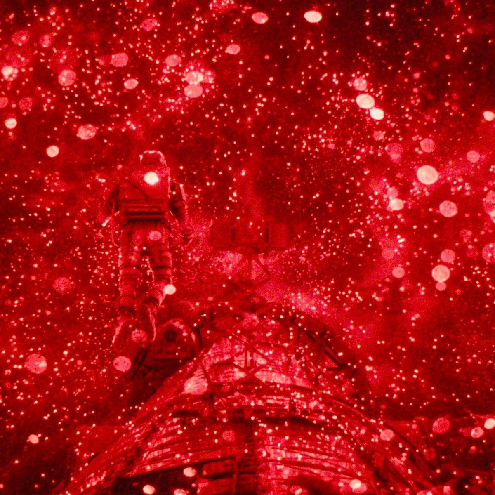

Briefing da Missão
O Sol está morrendo, consumido por uma forma de vida microscópica alienígena chamada Astrófago. A última esperança da humanidade repousa sobre uma missão suicida rumo ao sistema Tau Ceti.
Este arquivo documenta a ciência de sobrevivência e os registos de Tau Ceti para salvar a Terra. O destino de bilhões depende do sucesso desta jornada interestelar.

Status do SolEscurecimento: 10%